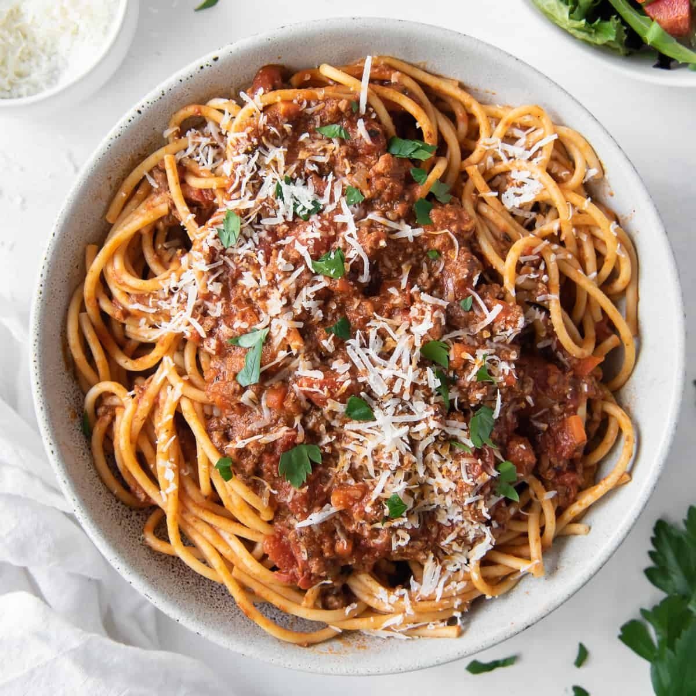

Pasta Bolognese

Pasta Bolognese, known in Italy as ragù alla bolognese
Pasta Bolognese is a slowly cooked meat-based sauce, and is often used to
refer to a tomato-based sauce to which minced meat has been added.
Ingredients
- Ground beef
- Tomato sauce
- Pasta
- Onion and garlic
Step-By-Step
- Boil the pasta: Cook in a large pot of salted water.
- Prepare meat sauce: Cook sausage and beef with
onion and garlic. Drain well, add the tomato sauce & simmer
it for a few minutes to thicken.